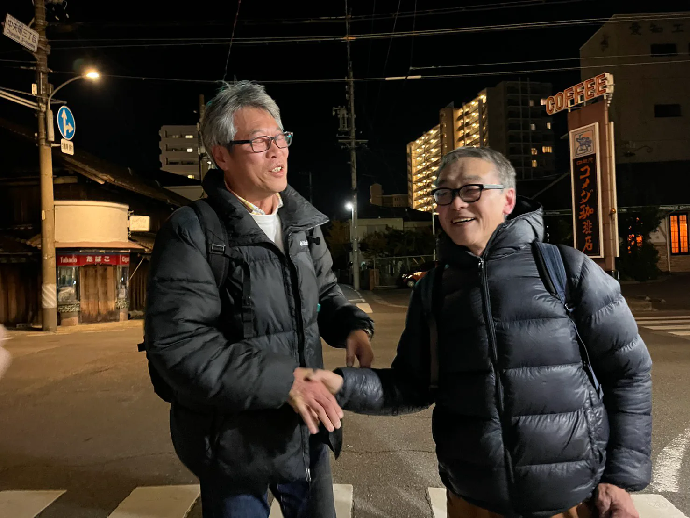

Two Eiji Watanabes二人のワタナベエイジ
“W Eiji” means “two Eiji Watanabes.” The artist Eiji Watanabe was born in Aichi Prefecture in 1961 and has long worked in studios in Nagoya and Agui. The neuroscientist Eiji Watanabe was born in the old downtown of Osaka in 1962, moved to Aichi in 1992 as a researcher at the Aichi Institute for Developmental Research, was an Assistant Professor at the National Institute for Basic Biology in Okazaki in 1995–98, and has been an associate professor of the Laboratory of Neurophysiology at the National Institute for Basic Biology in Okazaki since 1998. The same name, the same reading, born a year apart: for a long time the two lived in the same prefecture without knowing of each other.
The first thread goes back about ten years. When the artist searched for images of “eijiwatanabe” in Roman letters, the results mixed pictures of his own works with the face of a stranger and images of optical illusions. It was a researcher with the same name. The artist began to wonder whether he could bring the visuals of optical illusions into his work. Later the curator Yuri Yoshida told him she had met a researcher of that name at an Okazaemon event in Okazaki. In 2016 Toshiki Mikami, a former student of the artist, took part in an art exhibition at the National Institute for Basic Biology; the person producing it was the neuroscientist.
In the autumn of 2024, invited to teach drawing at the “Okazaemon Art Festival” at Libra, the Okazaki City Library and Exchange Plaza, the artist asked Hidehiko Komatsu, a neuroscience researcher who was among the visitors: “Is there an Eiji Watanabe at your institute?” Ten years had passed since the image search. “He is a colleague,” Komatsu answered, and through his introduction the artist soon went to visit the institute.
In December 2024 the two faced each other for the first time on the ground floor of the institute and greeted each other with “I’m Eiji Watanabe.” They talked for more than two hours. When the artist handed over a book of his works, the neuroscientist said, “It’s just like my research papers.” Komatsu, who was present, later wrote that the neural circuits in the two men’s brains had been set in intense motion, causing “their cerebral circuits to resonate.”

In the spring of 2025 the artist visited the laboratory in Okazaki together with the curator Satsuki Yamamoto. The exhibition title “Morning Monsters” fuses the artist’s solo exhibition “Morning Star” (Kenji Taki Gallery, 2024) with “Morning Monster” (2020), an optical illusion the neuroscientist created with Lana Sinapayen (Sony CSL). During the installation the two never once met, each preparing his own venue; they saw the whole of each other’s displays only on the opening day. The exhibition ran at Okura Park from November 1 to December 7, 2025, and drew the largest number of visitors in the ten years of Art Obulist.
Art Obulist (Art + Obu + List, “a list of art from Obu”) is an art project that the City of Obu, which has no art museum, launched in 2016. At its launch the artist, as committee chair, called it a “museum without a building.” 2025 marked its tenth year. After the exhibition, the physicist Masaki Watabe added his analysis (counter lecture vol.02 “Analyze W Eiji,” March 2026; Analyze W Eiji), and the activities of the two continue. In his text for the catalogue, the artist likened the encounter to “Misokaibashi,” a folk tale from Hida: a man who, following a dream, keeps standing on a bridge learns from another man’s dream that the treasure lay at his own feet.
The answer was right there in front of him. That was “the point.” That was “the miso”.